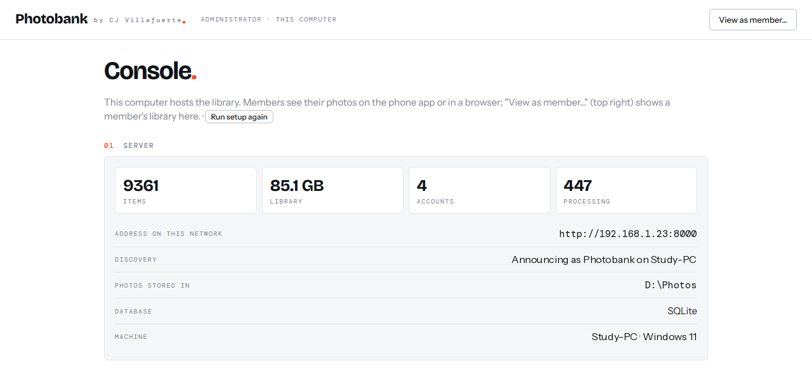
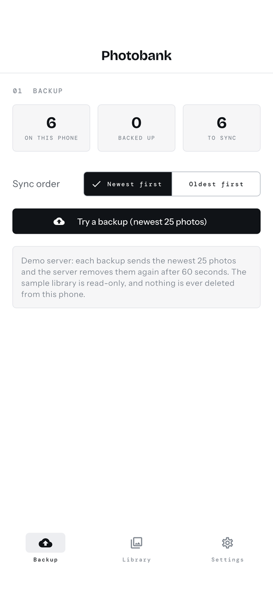
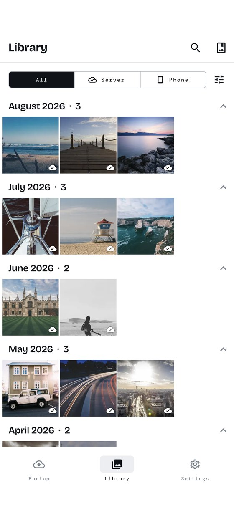

Photobank turns the computer you already own into your photo library. The iPhone app finds it on your Wi-Fi, backs up the camera roll, and frees space on the phone once every photo is confirmed safe. No cloud account, no subscription, no Docker — you double-click an app.
Photobank.exe (SmartScreen: More info → Run anyway). macOS: unzip, drag to Applications, right-click → Open the first time. Every build comes from the public Releases page.



Download for Windows or macOS and open it. The app runs the library and a small server while it is open, and shows its Console: you are the administrator here, with no password on this computer. In the Console, pick the folder where originals live (a big drive is a good idea), then create a member account — a name, an email and a password. That account is what you sign in with on the phone.
On the same Wi-Fi, the iPhone app finds the computer by itself — no addresses to type. Tap it and sign in with the member account from step 1, once; the phone remembers it. Every member has their own private library, and the administrator can add more accounts or reset a password from the Console at any time.
Tap Back up. Photos and videos go to the computer over the local network, Live Photos included, and nothing is uploaded twice. Choose how long to keep media on the phone; Photobank removes only what the server has confirmed it holds.
The phone discovers the computer on your Wi-Fi. Saved accounts sign in with a tap next time.
JPEG, PNG, HEIC, WebP, GIF, MP4, MOV and Live Photos, verified by checksum so nothing is stored twice.
Keep the last month or year on the phone; older items go only after the server confirms it has them.
Timeline by month, favorites, albums, trash with restore, hidden photos — on the phone, in any browser, on the desktop.
Text inside screenshots, receipts and signs becomes searchable (Tesseract OCR, on your computer).
Find visually similar duplicates, sort by size, see where the space goes.
Correct colors from HEIC and HDR captures (ICC-aware), EXIF dates, camera and location kept.
Each person gets a private library. The computer's owner administers accounts from the Console.
Redundancy backup mirrors the library to another disk or NAS, with a portable JSON export to move computers.
Python + FastAPI server, React web app, Flutter iPhone app. Read it, fork it, run it from source.
A public demo runs a read-only sample library. Open it in a browser — the login is filled in — or point the iPhone app at it with “Try the demo” on its first screen.
Photobank has no accounts with us, no analytics, no crash reporting and no advertising. Your photos travel from the phone to your computer over your own Wi-Fi and stay there. The iPhone app ships its own typefaces and never calls out.
Remote access is up to you: a VPN such as Tailscale gives the same app the same library from anywhere.
Read the privacy policy